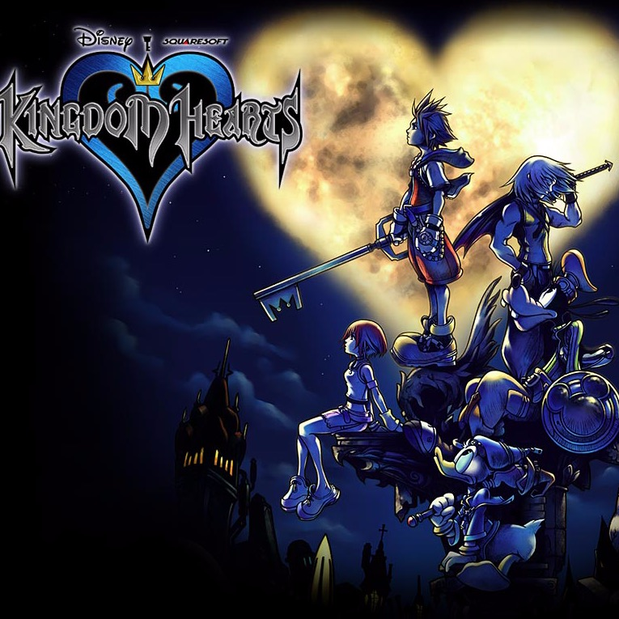

| Kingdom Hearts | |
|---|---|
|  | |
| Developer: | Square |
| Publisher: | Square |
| Year Released: | 2002 |
Game Description
Kingdom Hearts is an action RPG combining characters and worlds from Disney animations and movies, with the Final Fantasy game series. This game has a largely synthetic orchestral style due to the limitations of the hardware at the time. The mood of the music can range from happy and upbeat, to very dark or sombre.
This game's soundtrack was composed almost entirely by Yoko Shimomura, and her work on this game and the Kingdom Hearts series have since become some of her most acclaimed works. For this game, Shimomura highly emphasized creating songs that matched the setting they were meant for. This resulted in a lot of memorable music that was well-suited to the Disney or original worlds they were meant for.
One song in particular that Shimomura recalls spending a lot of time with is "Lazy Afternoons". It took many tries for her to get the approval of the game's director, Tetsuya Nomura, as he advocated that the song needed to be very melancholic. Shimomura eventually completed the song after spending some time on her patio watching a sunset. This method of composing and getting inspiration for songs is not foreign to Shimomura, and is a technique she occasionally uses in her works.
References Used
- “Kingdom Hearts.” Wikipedia, Wikimedia Foundation, en.wikipedia.org/wiki/Kingdom_Hearts. Accessed 9 July 2020.
- Wallace, Kimberley. “Kingdom Hearts Composer Talks Orchestra World Tour, Kingdom Hearts III.” Game Informer, Game Informer, 12 June 2017, www.gameinformer.com/b/features/archive/2017/06/12/-interview-composer-yoko-shimomura-kingdom-hearts.aspx. Accessed 9 July 2020.